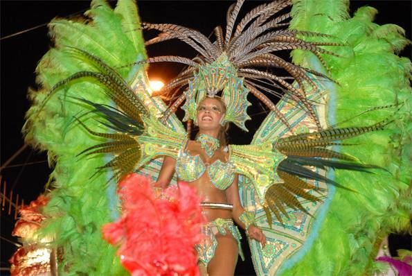
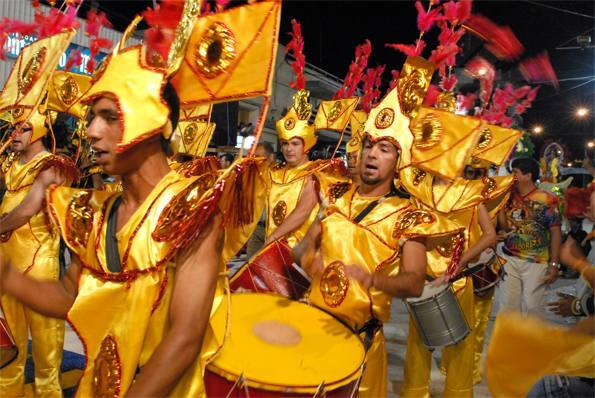
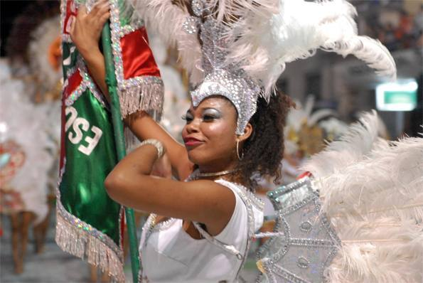
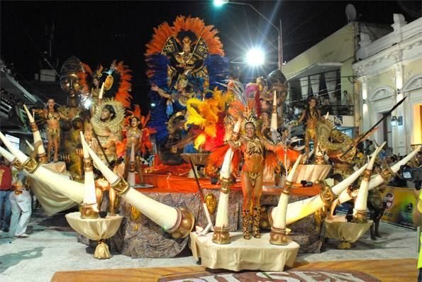
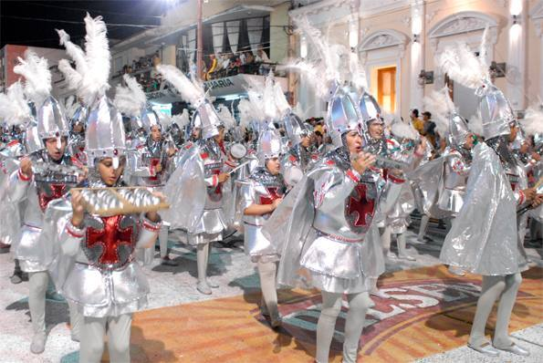
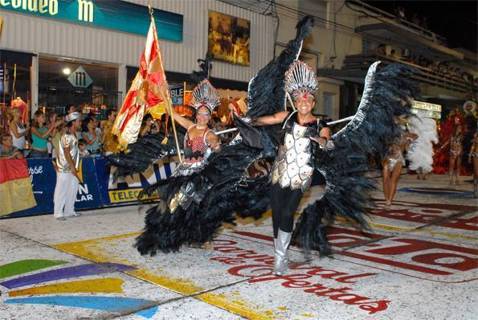
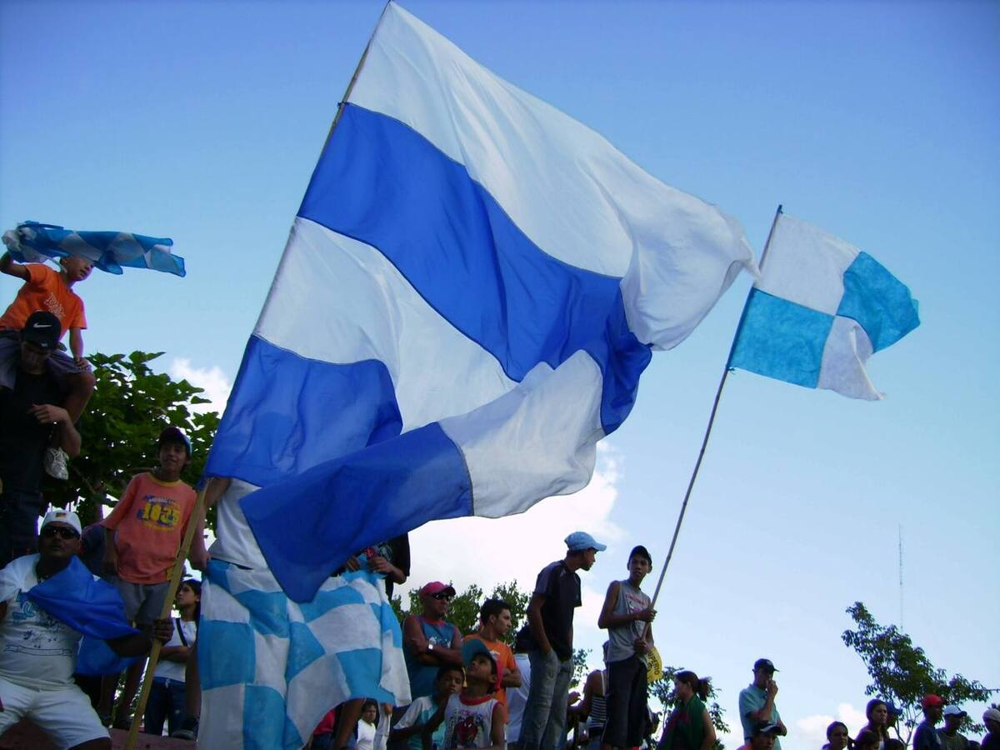

Una fiesta de frontera
Desde hace más de 40 años, Artigas celebra un carnaval inspirado en el de Río de Janeiro, pero con identidad propia, nacida de la cultura de frontera. Sus organizadores lo llaman un «mini Río de Janeiro».
El centro de la fiesta es el desfile de escuelas de samba por la avenida Carlos Lecueder, la principal de la ciudad. Cada escuela sale con alas de bailarines, carros alegóricos y su batería, y canta su samba enredo. El Ministerio de Turismo lo declaró de interés turístico.
La edición 2026
- Se desfiló del 14 al 16 de febrero.
- Participaron nueve escuelas de samba, con unas 6.500 personas: cinco en el Grupo Especial y cuatro en el Grupo Oro.
- Un jurado evalúa nueve aspectos durante dos noches. La campeona del Grupo Oro sube al Especial y la última del Especial baja.
- Dos cuadras del recorrido son de acceso gratuito.
- Se esperaba a más de 30.000 personas.
Más que tres noches
El carnaval mueve la gastronomía, la hotelería, la confección de fantasías y la producción artística de la ciudad. En los días previos también se pueden visitar los ensayos de las escuelas.
Bella Unión tiene su propio carnaval: durante cinco noches desfilan comparsas al ritmo de samba, con letras cantadas en español.
Fotos

Foto: Gerardo c · CC0

Foto: Gerardo c · CC0

Foto: Gerardo c · CC0

Foto: Gerardo c · CC0

Foto: Gerardo c · CC0

Foto: Gerardo c · CC0

Foto: Da dinges · Dominio público